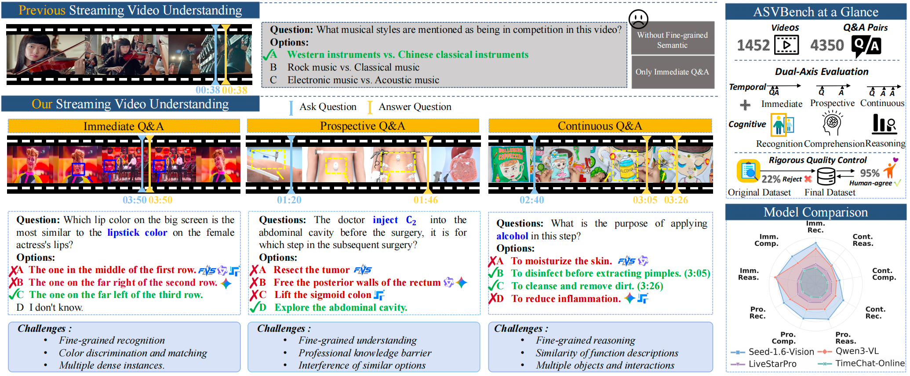
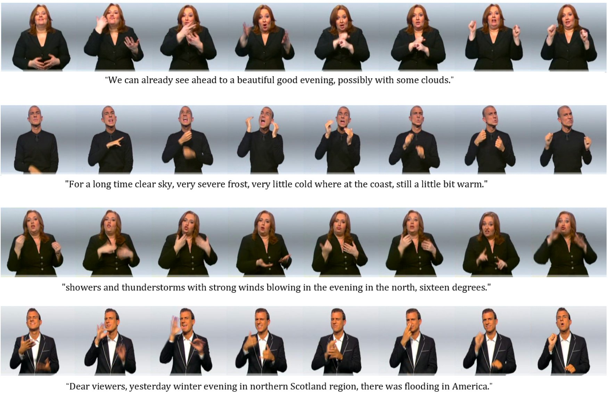

I am interested in Ph.D. opportunities in multimodal generation, video generation, world models, and embodied intelligence.
About me
Hi, I’m Xuehan Hou (侯雪晗), a master’s student in Computer Application Technology at Peking University. I received my bachelor’s degree in Software Engineering from Xi’an Jiaotong University, where I ranked 3/140.
My research studies how multimodal models can understand and generate temporally coherent, physically plausible, and controllable visual dynamics. I am particularly interested in connecting video generation with world models and embodied intelligence.
◆ News
Released Hallucination-Free GUI Grounding as an arXiv preprint.
Served as a reviewer for the NeurIPS 2026 Evaluations & Datasets Track.
Joined Tencent Shannon Lab as a research intern.
Anchor Frame Bridging was accepted to ICLR 2026.
Joined the Institute of Automation, Chinese Academy of Sciences as a research intern.
◇ Research Interests
01
Controllable Video Generation
Long-range temporal coherence, multi-action generation, sign-language synthesis, and multi-granular control.
02
Multimodal Video Intelligence
Streaming video understanding, asynchronous response, fine-grained triggering, and rigorous evaluation.
03
World Models
Learning physical and temporal dynamics for interactive generation, future prediction, and persistent visual environments.
04
Embodied Intelligence
Connecting multimodal perception and generative dynamics to agents that reason and act in changing environments.
Anchor Frame Bridging for Coherent First-Last Frame Video Generation
Xuehan Hou, Meng Fan, Pengchong Qiao, Zesen Cheng, Yian Zhao, Lei Zhu, Kaiwen Cheng, Chang Liu, Jie Chen#
A training-free anchor-frame bridging method that transfers semantic constraints from both boundary frames to improve temporal coherence across a generated video.
A multi-action human video generation framework that extracts physical motion priors from multimodal language models and visualizes them through image-agent guidance.

AAAI 2027Under Review
ASVBench: Asynchronous Response to Fine-Grained Triggers in Streaming Videos
A benchmark for asynchronous responses to fine-grained triggers in streaming video, evaluating temporal delay and cognitive difficulty beyond immediate question answering.

WACV 2027Under Review
SignControl: Multi-Granular Control for Sign Language Video Generation
Game clipping detection and repair: built anomaly-detection data and a benchmark for geometric intersection and occlusion failures in game videos.
Streaming audio-visual editing: developed an LTX-2.3-based video-to-video editing framework, trained a bidirectional audio-visual editor, and designed a three-stage causal distillation route covering attention causality, step reduction, and CFG-free inference.
Real-time game frame generation: designed a pseudo G-buffer pipeline that estimates depth, motion vectors, camera pose, and occlusion from conventional videos; explored diffusion-teacher distillation and difficult-region synthesis.
Institute of Automation, Chinese Academy of Sciences
Research Intern
Studied brain-inspired linear attention for unified multimodal understanding and generation.
Trained Show-o2 and decoupled two attention parameter groups for separate storage and optimization, enabling a “decouple first, linearize next” model-conversion path.
Reproduced and trained SANA, explored linear attention for image/video generation, and investigated high-resolution image distortions.